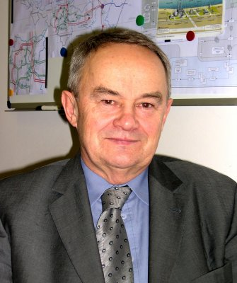

prof. Roman Janiczek
elektrotechnik, wykładowca, dyrektor
Życiorys
Roman Janiczek urodził się 21 września 1939 roku jako trzecie dziecko Jana Janiczka i Haliny Janiczek, z domu Krechowicz. Jego matka była nauczycielką wyróżniającą się znajomością trzech języków obcych, ojciec zaś oficerem Wojska Polskiego w stopniu kapitana, służącym jako dowódca kompanii w 1 batalionie 1 Pułku Strzelców Podhalańskich, przydzielonym do obrony wschodniej Małopolski. Po prawie dwóch tygodniach bohaterskiego oporu wobec wielokrotnie liczniejszych sił nieprzyjacielskich, oddział ten został rozbity, zaś Jan Janiczek dostał się do niemieckiej niewoli. Jako oficer przetrzymywany był w obozie jenieckim, oflagu Lubeka Gross-Born, gdzie spędził całą resztę wojny. Pomimo bycia w zaawansowanej ciąży, w obliczu niemieckiej agresji Halina Janiczek zdecydowała się uciekać z Nowego Sącza do Lwowa, w kierunku którego wycofywać się miały oddziały Armii Karpaty, w tym jej maż. Niestety, niedługo po jej przybyciu do wschodniej Polski wkroczyły oddziały sowieckie, kładąc kres wojskowemu planowi obrony na "przedmościu rumuńskim". W obliczu załamania się sytuacji ucieczka na Lwowszczyznę traciła sens, toteż Halina wyruszyła z dziećmi (Bogusław miał wówczas 4 lata, a Ewa 2 lata) w powrotną drogę do Nowego Sącza. To w pociągu na tej trasie, pośród chaosu dobijanej właśnie II RP, urodził się 21 września Roman, choć w dokumentach zapisano mu jako miejsce urodzenia Brzeżany, siedzibę Ośrodka Zapasowego 21 Dywizji Piechoty (w skład której wschodził 1 Pułk Strzelców Podhalańskich) i oficjalne miejsce rozlokowania ojca.
Po powrocie do Małopolski Halina Janiczek szybko włączyła się w ruch oporu. W maju 1942 roku jako członkinię AK aresztowało ją Gestapo. Początkowo przetrzymywana była w areszcie krakowskiej placówki Gestapo, następnie w sierpniu 1942 roku przeniesiono do obozu koncentracyjnego w Oświęcimiu, gdzie zmarła w marcu 1943 roku, niecałe trzy lata po śmierci swojego ojca, pułkownika Dionizego Krechowicza, lekarza wojskowego i komendanta 3 szpitala okręgowego w Grodnie, zamordowanego przez Sowietów w Starobielsku. Osamotnionymi dziećmi zaopiekowała się ciotka Józefa Wojciechowska i jej mąż, którzy wychowali je i zastąpili im rodziców. Jan Janiczek został wyzwolony przez alianckie wojska w 1945 roku i znalazł się we Włoszech. W obliczu przejęcia władzy w Polsce przez komunistów, i za namową własnej matki, zdecydował się nie wracać do Polski. Ożenił się ponownie z Franciszką, Żydówką ocalałą z obozu w Ravensbrück, i wraz z nią wyemigrował do Brazylii, gdzie bez większych sukcesów trudnił się przedsiębiorczością. Polskę mógł ponownie odwiedzić dopiero w 1957 roku. Podczas swojej ostatniej wizyty w ojczyźnie w 1989 roku zmarł i spoczął na cmentarzu w Gdańsku.
Państwo Wojciechowscy zamieszkali po wojnie w Kędzierzynie-Koźlu. Swoim przybranym dzieciom wpoili pracowitość i pomogli się wykształcić. Cała trójka ukończyła studia - Bogusław budownictwo, Ewa medycynę, a Roman energetykę na Wydziale Elektrycznym Politechniki Śląskiej. Po ukończeniu studiów w 1962 roku Roman rozpoczął pracę zawodową w Elektrowni Zabrze na stanowisku dyżurnego inżyniera ruchu. W tym czasie poznał również swoją żonę Marię, z domu Knieć, i osiadł z nią w Gliwicach. Urodziła im się dwójka synów - Grzegorz i Szymon. W 1965 z inicjatywy prof. Lucjana Nehrebeckiego podjął pracę na Politechnice Śląskiej, w Katedrze Elektrowni, równolegle pracując w ZBPE Energopomiar oraz Elektrowni Rybnik. W roku 1968 obronił pracę doktorską Ekonomiczne aspekty pracy szczytowej konwencjonalnych elektrowni parowych, zrealizowaną pod kierunkiem prof. Nehrebeckiego. Następnie pracował w Instytucie Energetyki, a po powstaniu Instytutu Elektroenergetyki i Sterowania w 1971 roku, w tymże instytucie, jako kierownik Zespołu Elektrowni i Gospodarki Elektroenergetycznej. Ponadto w latach 1973-1975 był prodziekanem ds. nauki Wydziału Elektrycznego. Na tyle, na ile pozwalały na to ówczesne warunki polityczne i finansowe, podróżował z rodziną, spędzając pamiętne wakacje m.in. w Grecji i Abchazji. W roku 1979 uzyskał stopień doktora habilitowanego za rozprawę Zasady planowania i projektowania elektrowni parowych w ujęciu systemowym. W 1985 roku pełnił obowiązki dziekana Wydziału Elektrycznego. W tym samym roku w uznaniu dorobku dydaktyczno-naukowego otrzymał tytuł profesora nauk technicznych.
Jako świeżo upieczony profesor, Roman Janiczek rozpoczął budowę rodzinnego domu w Żernikach, podczas której własnoręcznie wykonał znaczną część prac budowlanych. W 1991 roku został Dyrektorem Instytutu Elektroenergetyki i Sterowania Układów. Profesor był autorem bądź ponad stu publikacji naukowych, podręczników i skryptów, w tym wydanego w 1992 roku podręcznika akademickiego Eksploatacja Elektrowni Parowych, stanowiącego przez wiele lat podstawę kształcenia studentów Wydziału Elektrycznego na specjalności „Elektrownie”, oraz współautorem kilku monografii (w tym Rozproszone źródła energii w systemie elektroenergetycznym, wydane już po jego śmierci nakładem Wydawnictwa Politechniki Śląskiej). Był również twórcą konferencji naukowej Aktualne Problemy w Elektroenergetyce, oraz członkiem Komitetu Problemów Energetyki PAN, Polskiego Komitetu Światowej Rady Energetycznej (WEC), Sekcji Systemów Elektroenergetycznych Komitetu Elektrotechniki PAN, Stowarzyszenia na Rzecz Gospodarki Energetycznej Polski, Polskiego Komitetu Energii Elektrycznej oraz Stowarzyszenia Elektryków Polskich. Był wielokrotnie wyróżniany odznaczeniami państwowymi, resortowymi i uczelnianymi oraz nagrodami Ministra Nauki i Szkolnictwa Wyższego. Profesor Janiczek kontynuował dzieło prof. Nehrebeckiego, tworząc część "śląskiej szkoły elektrowni", wyróżniającej się analizowaniem elektrowni nie tylko jako istotnego elementu systemu elektroenergetycznego, ale także jako części gospodarki narodowej i światowej. Pod koniec życia zajmował się głównie tematami związanymi z bliską jego sercu kwestią ograniczania wpływu energetyki na środowisko naturalne - źródłami odnawialnymi oraz energetyką rozproszoną.
W 1994 roku Profesor zakończył aktywną karierę dydaktyczną i podjął pracę w Polskich Sieciach Elektroenergetycznych na stanowisku Dyrektora ds. Rozwoju, odpowiadając za bezpieczeństwo energetyczne i aspekty ekonomiczne w energetyce, jak również doradzając w kwestii regulacji prawnych polskiej energetyki po transformacji ustrojowej i konieczności dostosowania regulacji ustawowej do europejskich standardów. Następnie pełnił w PSE funkcję Dyrektora Departamentu Zarządzającego Usługami Sieciowymi. W związku z pracą przeniósł się do Warszawy, gdzie zamieszkał w dzielnicy Wólka Węglowa. Regularnie odwiedzał jednak Gliwice, z pasją oddając się pielęgnowaniu swojego ogrodu. W 2003 roku odszedł z PSE i zajął się organizacją i prowadzeniem Rady Konsultacyjnej spółki Energoprojekt Consulting SA. Od 1 października 2004 roku miał przejść na cześciową emeryturę i powrócić do pracy w Politechnice Śląskiej. Tych planów niestety nie udało się zrealizować - Profesor zmarł dokładnie w dniu swoich urodzin, 21 września 2004 roku, po krótkiej walce z rakiem. 27 września został pochowany na cmentarzu centralnym w Gliwicach, zgodnie ze swoim życzeniem pod prostym, skromnym nagrobkiem w skandynawskim stylu.
"Wielki wkład dydaktyczny Profesora w dziedzinie wytwarzania energii elektrycznej najlepiej widać w elektrowniach, gdzie pracuje Jego wielu byłych studentów posługujących się do tej pory Jego podręcznikami i skryptami."